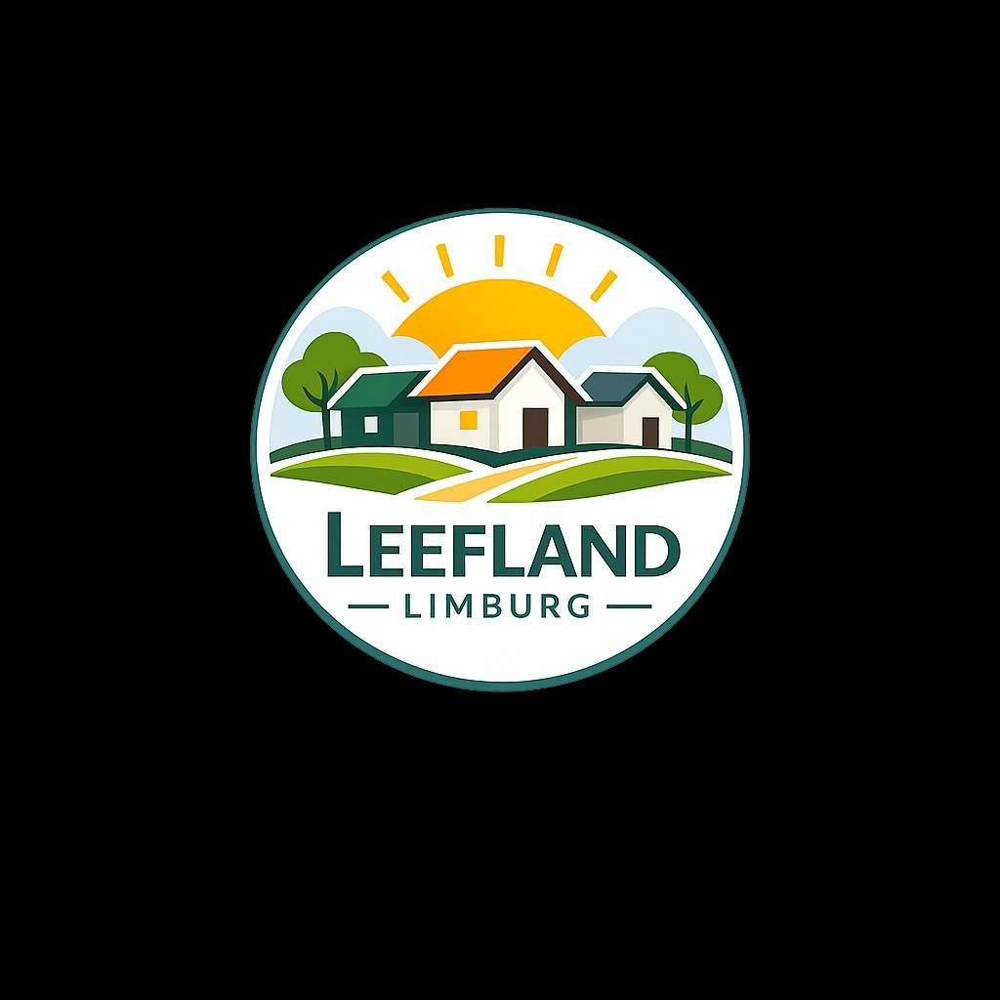

01
Loket
Eén plek waar een collectief terecht kan met de eerste vraag, en waar gemeenten weten wie ze moeten bellen.
Leefland Limburg is het aanspreekpunt voor bewonerscollectieven die zelf willen bouwen — en voor de gemeenten en provincie die daar ruimte voor maken.
Onze aanpak
Wooncollectieven vormen na corporaties en ontwikkelaars de derde bouwstroom. Wij zorgen dat die stroom in Limburg op gang komt: met een loket, met begeleiding en met afspraken die per gemeente navolging kunnen krijgen.
Eén plek waar een collectief terecht kan met de eerste vraag, en waar gemeenten weten wie ze moeten bellen.
Ervaren procesbegeleiders die het traject kennen: groepsvorming, locatie, ontwerp, financiering en beheer.
We zoeken met gemeenten naar percelen, leegstaande panden en herbestemmingen die zich lenen voor collectief wonen.
Modelafspraken, rekenvoorbeelden en ervaringen uit de praktijk, zodat niemand het wiel opnieuw uitvindt.
Voor gemeenten en provincie
100.000
Woningen landelijk potentieel van wooncollectieven
±10%
Aandeel van de nieuwbouwopgave
00
Initiatieven in Limburg — cijfer aanvullen
Initiatieven
Achttien woningen rond een gedeelde binnentuin, in eigendom van de bewoners.
In ontwikkeling
Twaalf huurwoningen voor jong en oud, gezocht wordt een locatie binnen de kern.
Locatie gezocht
Herbestemming van een leegstaande hoeve tot negen woningen met gedeelde werkplaats.
In voorbereiding
Tijden veranderen, de contouren van een andere bouwcultuur worden zichtbaar.
We vertellen graag wat er in andere Limburgse gemeenten al loopt, en wat een eerste stap zou kunnen zijn.
Nieuwsbrief
Een paar keer per jaar: nieuwe initiatieven, locaties en beleidsontwikkelingen.

Samen bouwen aan een leefbare toekomst